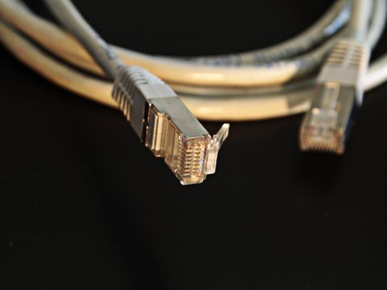

Ethernet
Ethernet é a tecnologia com fio mais comum em redes locais. Computadores, impressoras e pontos de acesso podem ligar-se a um switch, que encaminha os dados para o dispositivo correto.
O switch aprende os endereços dos equipamentos e usa essa informação para encaminhar quadros dentro da rede local. Roteadores conectam redes diferentes, como a rede do escritório e a internet.
Há padrões de 10 Mb/s, 100 Mb/s, 1 Gb/s e velocidades maiores. A velocidade real depende das portas, do cabo e dos equipamentos nas duas pontas.
Detalhes técnicos
- Cabeamento
- Par trançado: Cat5e (até 1 Gb/s em 100 m), Cat6 (10 Gb/s até 55 m), Cat6A (10 Gb/s em 100 m) e Cat8 (25/40 Gb/s até 30 m). Também pode usar fibra; coaxial (10BASE5/10BASE2) aparece em padrões legados. Conectores: RJ45, SFP/SFP+, M12 D-coded (100 Mb/s), M12 X-coded (10 Gb/s) e RJ45 industrial push-pull. Topologias atuais incluem estrela e árvore; anéis podem usar RSTP ou MRP; barramento é legado coaxial.
- Sinais elétricos
- 10BASE-T usa Manchester; 100BASE-TX, 4B5B e MLT-3; 1000BASE-T, PAM-5; e 10GBASE-T, PAM-16. O sinal é diferencial e balanceado, com transformadores de isolamento citados em cerca de 1500 Vrms. PoE: 802.3af (15,4 W), 802.3at (30 W) e 802.3bt (aproximadamente 60–90 W). Torção, blindagem F/UTP ou S/FTP e aterramento correto ajudam contra EMI; fibra elimina esse tipo de interferência.
- Comunicação
- CSMA/CD com detecção e backoff exponencial é associado a meios compartilhados half-duplex; em switches full-duplex modernos não há colisões. O quadro inclui preâmbulo (7 bytes), SFD, MAC de destino/origem, EtherType/Length, dados (46–1500 bytes) e FCS CRC-32. VLAN 802.1Q acrescenta 4 bytes.
- Desempenho
- Há taxas de 10 Mb/s até 400 Gb/s. O limite usual de um segmento de cobre é 100 m (90 m de cabeamento permanente e até 10 m de cordões). Ethernet básica não garante tempo determinístico; QoS e TSN (IEEE 802.1) podem melhorar o tratamento de tráfego sensível ao tempo. No documento, aparece nos níveis de Controle, Supervisão e Integração.